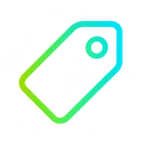
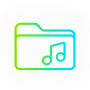
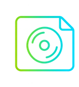
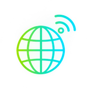

File Name
The grid, and everything in it
Every file in a real folder structure, editable like a spreadsheet. Tick the fields you mean to change, save across the whole album, and nothing else gets touched — an absent field is left exactly as it was.

Rename from tags
Templates, with a Test window that shows every before and after pair — and a button to go ahead once it looks right. Undo is one click.
Tags from file names
The same templates, backwards. Point them at
04 - In The Light.mp3 and get the
track number and title back out.

Every format you own
ID3v2.3 and 2.4, iTunes MP4, Vorbis comments, APEv2, Windows Media and Matroska — mp3, flac, wav, aiff, ogg, opus, m4a, wma, dsf, ape, wv, mpc, mkv, webm.

Cover art by drag and drop
Drop a picture on the art box and it goes into every selected
file, or beside them as folder.jpg. JPEG and PNG pass
through untouched.

Album details from the web
MusicBrainz needs no account; Discogs takes a free token. Titles line up against your files, and you write only what you tick.
Convert without leaving
FLAC, WAV, M4A and MP3 at the quality you choose. Output lands in a subfolder — the originals are never touched.
Start from the file manager
Right-click a song, Open with → RiffTag, and it opens that song's folder with the song already selected. Select several first and they all come through.
| %1 | Artist | %6 | Track # |
| %2 | Title | %aa | Album Artist |
| %3 | Album | %b | BPM |
| %4 | Year | %key | Initial Key |
| %5 | Genre | %t | Play time |
Release Check
What a distributor would send back
Point it at a finished album and it reports what will be rejected, what will quietly hurt you on streaming, and what is simply worth a look. Every finding names the file and the fix. Nothing is written.
Cover art is 1024×1024; 3000×3000 is the usual minimum. (every track)
Re-export the cover at 3000×3000 and embed it with folder.jpg → tag art.
Lyrics still carry section headers like [Verse 1]. (every track)
Lyrics → Clean lyrics for streaming.
Track titles use more than one capitalisation: 15× Title Case, 2× lower
The Rename tab's Case box can restyle them, or fix them in the grid.
−7.4 LUFS — 6.6 dB louder than the −14 LUFS streaming target, true peak +0.8 dBTP
Platforms turn it down anyway; a true peak above −1 can clip once it is transcoded.
No ISRC. Your distributor usually assigns one — paste it back in afterwards.
It also catches an album title that disagrees with itself, an album artist that differs between tracks, duplicate or missing track numbers, artwork that is not square or not the same on every file, “feat.” in the title but not the artist field, and a lossy master where a distributor wants WAV or FLAC.
Lyrics
Written for people who write lyrics
Writing tools leave scaffolding everywhere — [Verse 1],
(x2), a copyright line at the bottom. Streaming platforms
want the words and nothing else.
It never deletes a line that might be lyrics: bracketed lines are
scaffolding by construction, but a bare Chorus: only goes
if the word is one it knows. “Hold on:” is a lyric.
Download
Free, and free to keep
The same program on both, from the same source. No accounts, no telemetry, no feature locked behind anything.
Linux Debian · Ubuntu · Mint
sudo dpkg -i rifftag_0.4_all.deb- ~5 MB — Qt and mutagen come from your distro
- Playback wants
python3-pyqt6.qtmultimedia; converting wantsffmpeg. Both optional.
Windows 10 · 11
- The installer adds a Start Menu entry and an uninstaller, and puts RiffTag in the right-click Open with menu
- Or take the portable zip: unzip, run
RiffTag.exe, nothing is installed - ~118 MB installed, because Qt travels with it
- ffmpeg on your PATH enables converting and the loudness check
Windows may show “Windows protected your PC” — the installer is not code-signed yet. Click More info → Run anyway. RiffTag never takes over your default music player; it only adds itself to the Open with menu.
Something broken, or behaving oddly? Report it on GitHub — public, so the answer helps whoever hits it next.
The GPL gives you the right to the source, so it sits beside the builds rather than being available on request. Read it on GitHub, or take the exact tarball these builds came from: rifftag-0.4-source.tar.gz.
RiffTag is free. It always will be.
No trial, no upgrade prompt, no feature held back. If it saved you an evening, there is a tip jar — and the app asks exactly once, in the About box, and never again.